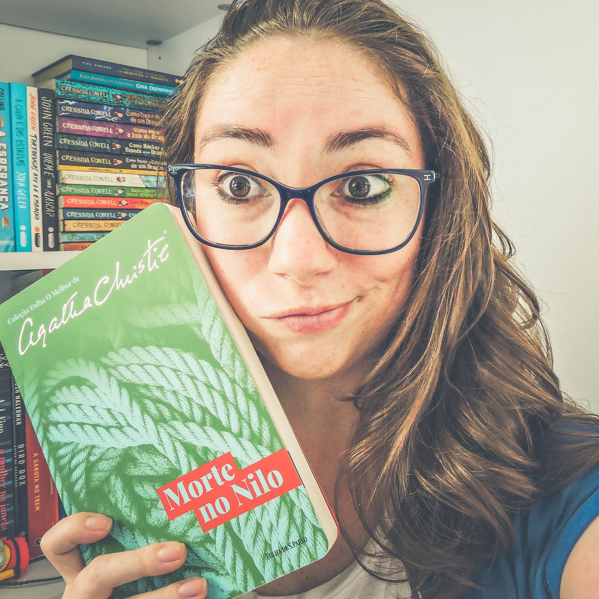

About Me


I am a Brazilian woman, 26 years old. I live in São Paulo, Brazil, with my husband and our little dog, a Pomeranian.
I am an introverted and dreaming person, I love to study, and above all, I am passionate about books.
I discovered reading when I was a child, and since that time I have never stopped reading. On this site, I bring you the five best series of fantasy books, series that I read when I was still a child and that awakened in me the love I feel for books.
They are a series of books that can be read at any age, and each one of them presents us with a new world of discoveries and magic, to delight all readers.